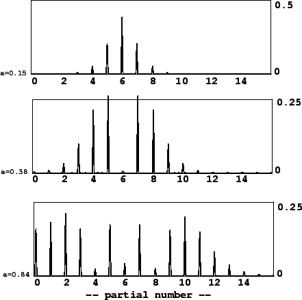
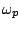
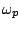

Example E08.phase.mod.pd, shown in Figure 5.15, shows how to use Pd to
realize true frequency
modulation (part a) and phase modulation (part b). These correspond to the
block diagrams of Figure 5.8. To
accomplish phase modulation, the carrier oscillator is split into its phase and
cosine lookup components. The signal is of the form
We can predict the spectrum by expanding the outer cosine:
|  |
Phase modulation can thus be seen simply as a form of ring modulated waveshaping. So we can use the strategies described in Section 5.2 to generate particular combinations of frequencies. For example, if the carrier frequency is half the modulation frequency, you get a sound with odd harmonics exactly as in the octave dividing example (Figure 5.10).
Frequency modulation need not be restricted to purely sinusoidal carrier or
modulation oscillators. One well-trodden path is to effect phase modulation
on the phase modulation spectrum itself. There are then two indices of
modulation (call
them  and
and  ) and two frequencies of modulation (
) and two frequencies of modulation ( and )
and the waveform is:
and )
and the waveform is:
Since early times [Sch77] researchers have sought combinations of phases, frequencies, and modulation indices, for simple and compact phase modulation instruments, that manage to imitate familiar instrumental sounds. This became a major industry with the introduction of commercial FM synthesizers.